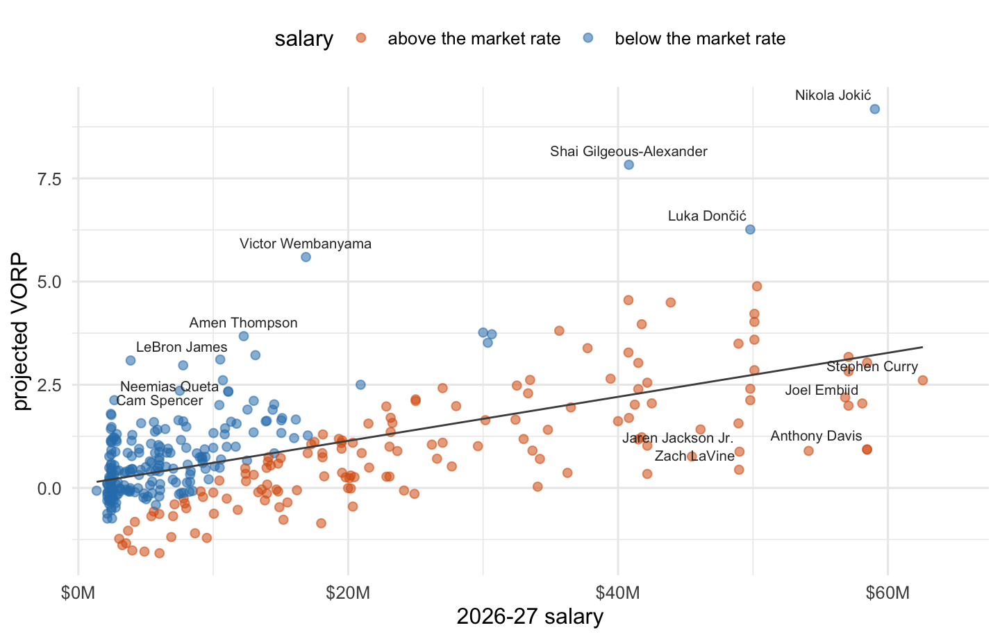
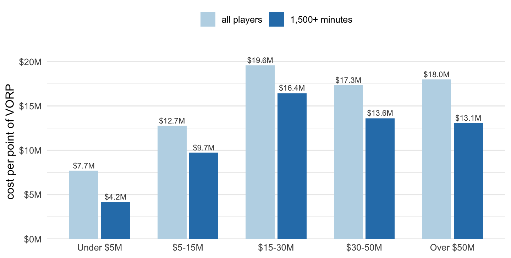
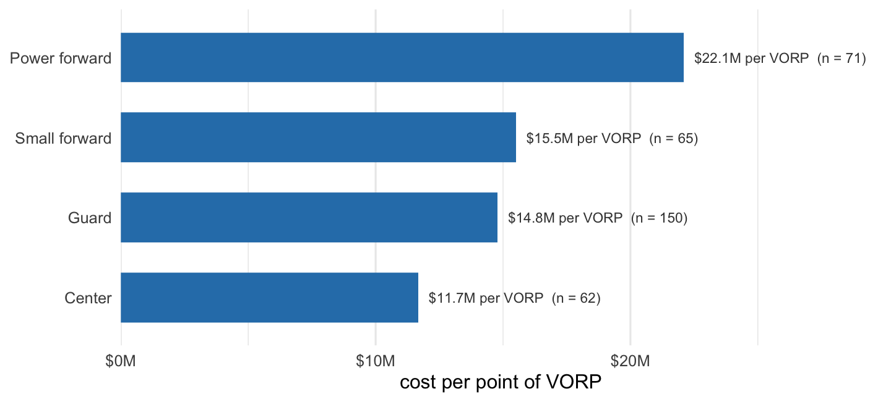

| Page | Saved as | Size (MB) | Accessed |
|---|---|---|---|
| /leagues/NBA_2026_advanced.html | bbref_advanced_2026.html | 2.18 | 2026-09-20 |
| /leagues/NBA_2025_advanced.html | bbref_advanced_2025.html | 2.17 | 2026-09-20 |
| /contracts/players.html | bbref_contracts_players.html | 0.52 | 2026-09-20 |
Paying for wins
Scraping Basketball-Reference to find out what NBA production costs, and where it costs least
web scraping
rvest
sports economics
Three pages of HTML, 348 players, and one question: if a team has $30 million to spend this October, which part of the market gives it the most production per dollar?
Suppose a team has $30 million of cap space to spend this October. Spread across players earning under $5 million a year, it buys about 3.9 points of VORP, going by what that part of the market produced last season. Spent on one player in the $15 to $30 million range, it buys about 1.5. Multiply by the 2.7 that Basketball-Reference uses to turn VORP into wins and the same $30 million is worth roughly 11 wins at one end of the market and 4 at the other.
That gap is the question this post is about. The data behind it sits in three HTML tables that anyone can read, so the first job is getting them into R.
Choosing a source that can be scraped
Basketball-Reference publishes season statistics and contract tables as ordinary server rendered HTML. There is no public API for them and no bulk download, which puts this squarely in the last box of the acquisition decision tree: static HTML, no better structured alternative, collection permitted.
Permitted matters. Their robots.txt blocks */gamelog/, */splits/, */on-off/, */lineups/ and */shooting/ for a generic user agent, leaves /leagues/ and /contracts/ open, and asks for a three second crawl delay. This project needs three pages, once:
Three requests, four seconds apart, with a user agent that says who is asking and leaves an email address. The full acquisition script is in R/01_acquire.R; the part that does the work is short.
fetch_snapshot <- function(url, path, force = FALSE) {
if (file.exists(path) && !force) {
message("cached ", basename(path))
return(invisible(FALSE))
}
Sys.sleep(CRAWL_DELAY)
resp <- GET(url, user_agent(USER_AGENT), timeout(60))
if (status_code(resp) != 200) {
stop("request failed with status ", status_code(resp), ": ", url)
}
write_html(read_html(resp), path)
invisible(TRUE)
}The snapshot is the reason to separate downloading from parsing. Basketball-Reference redesigns its tables occasionally, and a selector that works today can return nothing next spring. With the HTML on disk, a broken parse is a bug I can fix against the exact page I saw, and re-running the analysis costs zero requests to their servers.
Getting a table out of the page
The season table has the id advanced, so one selector finds it and html_table() does the rest.
page <- read_html(file.path(RAW_DIR, "bbref_advanced_2026.html"))
advanced <- page |>
html_element("#advanced") |>
html_table()Sports Reference sites have a habit of burying secondary tables inside HTML comments, where html_element() cannot see them, and the workaround is worth keeping even when the page does not need it. find_table() in R/02_clean.R looks in the visible document first, then inside the comment nodes:
find_table <- function(page, css) {
node <- html_element(page, css)
if (!inherits(node, "xml_missing")) return(node)
commented <- xml_find_all(page, "//comment()") |>
xml_text() |>
keep_containing(css)
if (length(commented) == 0) stop("no table matching ", css, " in the snapshot")
html_element(read_html(commented[[1]]), css)
}What comes back is a data frame of strings, and two things in it are wrong in ways that would quietly corrupt the analysis. Names carry bracketed footnote markers, so Jokić[a] and Jokić are different players as far as a join is concerned. And a player traded mid-season gets one row per team plus a combined 2TM row, all sharing a rank, so James Harden appears three times and would be counted three times.
collapse_traded <- function(df) {
df |>
group_by(season, rk) |>
mutate(traded = any(str_detect(team, "^\\d+TM$"))) |>
filter(!traded | str_detect(team, "^\\d+TM$")) |>
ungroup() |>
select(-traded)
}The contracts page needs its own handling: it has a two-row header, so html_table() hands back the real column names as the first row of data, and every salary arrives as a string like $62,587,158 that parse_number() turns into a number.
Checking that the parse is right
A scrape that runs without error is not a scrape that worked. Columns shift, numbers come back as text, a repeated header row sneaks in as a player named “Player”. VORP happens to give a free way to test for all of that at once, because it is a deterministic function of two other columns on the same page:
\[\text{VORP} = (\text{BPM} + 2) \times \frac{\text{MP}}{48 \times 82}.\]
So recompute it and compare:
check <- analysis |>
mutate(vorp_hat = (bpm + 2) * mp / (48 * 82),
gap = abs(vorp_hat - vorp))
max(check$gap)[1] 0.1224085The largest disagreement across 348 players is rounding. Had a column been off by one, or had minutes been read as a character vector, this number would have been nonsense immediately.
What the join drops
Production comes from the 2025-26 season; salary is the 2026-27 figure, because that is the money a team is actually committing now. Joining them on player name, after transliterating accents and dropping punctuation and generational suffixes, matched 416 of 484 contracts, or 86 percent. The misses are more interesting than the matches.
| Player | Team | 2026-27 salary |
|---|---|---|
| Tyrese Haliburton | IND | $48.9M |
| Kyrie Irving | DAL | $39.5M |
| Damian Lillard | MIL | $35.9M |
| Fred VanVleet | HOU | $25.0M |
| AJ Dybantsa | WAS | $14.7M |
Nobody dropped out because of a spelling mismatch. The unmatched contracts are 2026 draft picks who have not played an NBA minute and veterans who missed last season hurt. Tyrese Haliburton, Damian Lillard and Kyrie Irving are owed roughly $124 million between them for a season none of them produced anything toward. That is a finding rather than a data problem, and I come back to it below.
Requiring at least 500 minutes played leaves 348 players to work with. Below that, a rate statistic is mostly noise.
The price of production
The simplest way to ask what a unit of production costs is to regress salary on it. To reduce the noise in a single season of BPM, the production measure blends 2025-26 with 2024-25 at one-third weight and puts the blend back on the VORP scale at this season’s minutes.
market_fit <- lm(salary ~ proj_vorp, data = analysis)
coef(market_fit)(Intercept) proj_vorp
9026331 6779867 The slope says the market paid about $6.8 million for one point of VORP, which is roughly $2.5 million per win added. The intercept says a player who produced nothing at all still collected about $9.0 million, which is several times the veteran minimum and the first sign that the relationship is looser than it looks. R² is 0.36: production explains about a third of what players are paid.

Victor Wembanyama is the largest single piece of surplus in the league, producing at a level the market would charge about $47 million for while still on his rookie scale deal at $16.9 million. The other end of the chart is a list of maximum contracts attached to players who barely played.
Where the money goes to die
Sorting players into salary bands makes the pattern easier to read than the scatter does.
| Salary band | Players | Median salary | Median VORP | Cost per VORP |
|---|---|---|---|---|
| Under $5M | 111 | $2.6M | 0.10 | $7.7M |
| $5-15M | 124 | $8.7M | 0.53 | $12.7M |
| $15-30M | 55 | $20.2M | 1.01 | $19.6M |
| $30-50M | 42 | $40.8M | 2.03 | $17.3M |
| Over $50M | 16 | $57.1M | 2.84 | $18.0M |
Production gets more expensive as salaries rise, which is what competition for scarce talent is supposed to do. The part that is not expected is where the curve peaks. The most expensive production in the league is not at the top. It is in the $15 to $30 million band, at $19.6 million per VORP, worse than the $30 to $50 million band and worse than the players earning more than $50 million.

Two forces produce that shape. At the top, the collective bargaining agreement caps what any individual can earn, so the best players in the league are structurally underpaid: the fitted line would put Shai Gilgeous-Alexander’s production at about $62 million, which no team is allowed to pay him. At the bottom, minimum and rookie scale contracts are set by rule rather than by bidding, and a young player who turns out to be good stays cheap for years.
The $15 to $30 million band has neither protection. It is priced by open negotiation between teams with cap space and agents for players who were good enough to be paid but not good enough to be capped, and it is the one place in the market where teams routinely pay full price. Half the players in that band produced less than 1.01 VORP.
The 1,500+ minutes bars are a check on whether injuries drive this. They do not. Dropping to players who were available for most of the season cuts the cost of production everywhere, by a lot at the cheap end, and leaves the $15 to $30 million band still the most expensive in the league at $16.4 million per VORP.
Positions are not priced consistently either

Centers delivered production at $11.7 million per VORP and power forwards at $22.1 million, on median salaries of $9.7 million and $10.4 million. The ordering holds among high minute players too, where the same two groups come in at $9.5 million and $18.3 million.
This is the finding I trust least, and the reason is the measure rather than the data. BPM is estimated from the box score, and rebounds and blocks are counted events while rotating onto a driver or holding a screen are not. Big men accumulate the former. Whether centers are genuinely underpriced or merely flattered by the statistic is not something three HTML tables can settle, and the honest version of the claim is narrower: if a front office evaluates players with public box score metrics, those metrics say the cheapest production available is at center and the most expensive is at power forward.
What a team should do with this
For a team with cap space and no realistic path to a superstar, the ordering in Figure 2 says: spend at the extremes and stay out of the middle. Four players at $7 million who each produce half a point of VORP return twice what one player at $28 million producing a single point returns, for the same money, and the second option is the one teams keep choosing.
The exception is worth stating clearly, because it is the reason smart teams still pay the top of the market. Roster spots are capped at 15 and minutes are capped at 240 a night, so production per dollar is not the only constraint that binds. A team that has already filled its roster with useful $7 million players cannot buy any more of them, and at that point the only way to add production is to pay for a player who supplies more of it per minute. Cheap production is the right way to build a roster from empty, not the right way to improve a good one.
The injured contracts point the same direction from the other side. Haliburton, Lillard and Irving are owed roughly $124 million for 2026-27 with no production last season to price it against, and across every salary band in this sample, between 34 and 44 percent of players appeared in fewer than 60 games. Availability is not something only cheap players fail at. A roster whose production is spread across six moderately paid players absorbs one of those losses; a roster with $60 million in one player does not.
So the recommendation for a budget-constrained team in October 2026 is narrow enough to act on. Fill the roster from the under $5 million market and from rookie scale contracts, where production costs a third of what it costs anywhere else. Refuse the $15 to $30 million tier, where each point of VORP costs more than it does at the very top of the market. And if the front office is going to make one large commitment, make it at the position where the metrics say production is cheapest, not at the one where they say it is dearest.
The files
Everything is regenerable from three cached HTML files. The scripts run in order and only the first touches the network.
blog/posts/post2/
├── index.qmd
├── R/
│ ├── 00_config.R paths, sources, constants, text helpers
│ ├── 01_acquire.R fetch -> data/raw/*.html + metadata.csv
│ ├── 02_clean.R parse -> data/derived/*.csv
│ └── 03_analyze.R price -> results/tables/*.csv
├── data/
│ ├── raw/ HTML snapshots + provenance record
│ └── derived/ player_seasons, player_salaries, analysis_data
├── results/tables/ the summary tables in this post
└── docs/data_notes.md sources, cleaning decisions, limitationsSource and cleaning details, the full list of validation checks, and what this data cannot support are in the data notes. Statistics are from Basketball-Reference, accessed 2026-09-20; salary figures are 2026-27 and production is from the 2025-26 season.